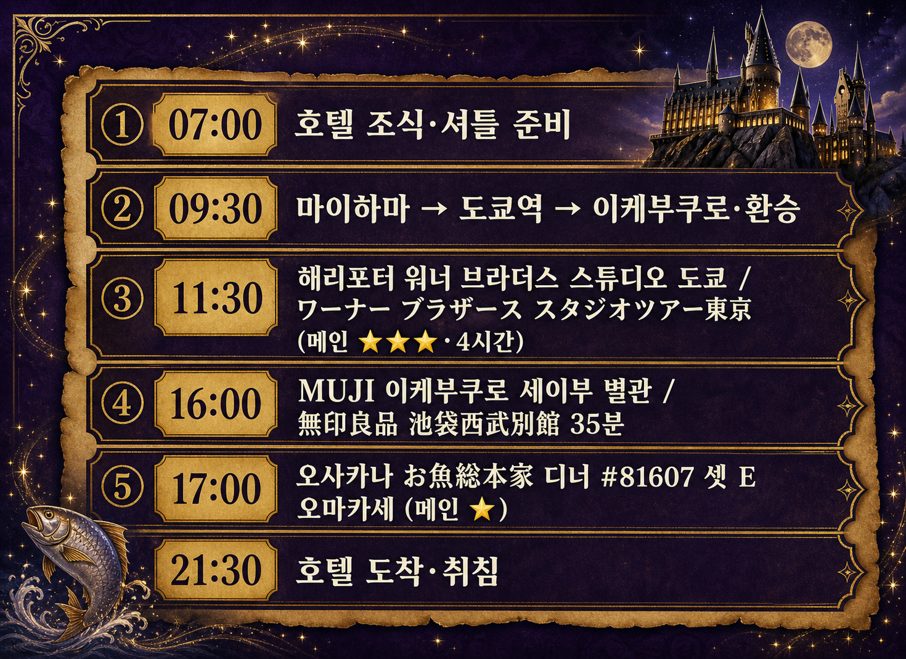
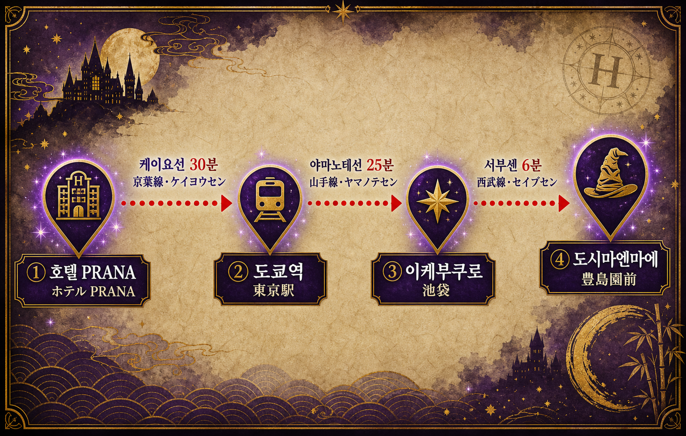
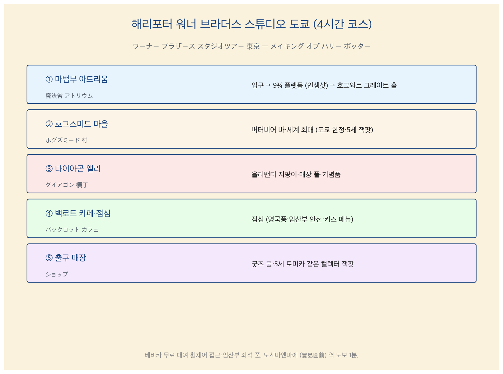

D3 — 5월 21일 (목) 해리포터·MUJI·오사카나 디너
D3 — 5월 21일 (목) 해리포터·MUJI·오사카나 디너
해리포터 워너 브라더스 스튜디오 도쿄 (ワーナー ブラザース スタジオ ツアー 東京) 11:30 입장 / 오사카나 소혼케 이케부쿠로 서출구점 (お魚総本家 池袋西口店) 17:00 디너 #81607
가족 3명 (수억·아람·준혁) / 임산부 16주 + 5세
① 그날 요약
D3 = 마법 + 일식 풀데이 · 메인 = ① 해리포터 스튜디오 4시간 (11:30-15:30) ② MUJI 이케부쿠로 세이부 별관 35분 (임산부 휴식·5세 자유 시간) ③ 오사카나 #81607 17:00 디너 (트레타 파고타츠석·셋 E 점원 추천 오마카세 ¥10,000-15,000). 동선 = 호텔 → 마이하마 → 도쿄역 → 야마노테선 → 이케부쿠로 → 서부센 → 도시마엔마에.

6 슬롯 흐름 = 호텔 조식 → 환승 → 해리포터 → MUJI → 오사카나 → 호텔 취침
② 동선
호텔 → 마이하마역 → JR 케이요선 30분 → 도쿄역 → 야마노테선 환승 → 이케부쿠로 → 서부센 (西武線·세이부센) 6분 → 도시마엔마에 (豊島園前·토시마엔마에)역 → 해리포터 스튜디오 (도보 1분). 귀로 = 이케부쿠로에서 오사카나 디너 후 동일 동선 역방향.

🌐 인터랙티브 동선 지도: D3_folium.html — 8 핀 (호텔·마이하마·도쿄역·이케부쿠로·MUJI·오사카나·도시마엔마에·해리포터).
③ 시간순 일정 (메인)
07:00-09:00 · 호텔 조식·셔틀 준비
- 07:00-07:50 호텔 7F 욕탕 (간단)
- 07:50-08:30 호텔 1F 조식
- 08:30-09:00 짐 정리·베비카·핸드캐리
09:00-11:25 · 호텔 → 마이하마 → 도쿄역 → 이케부쿠로 → 도시마엔마에
- 09:00-09:20 호텔 → 마이하마역 셔틀 (15분)
- 09:20-09:50 JR 케이요선 마이하마 → 도쿄역 (30분)
- 09:50-10:00 도쿄역 야마노테선 환승 (지상 평지·엘리베이터)
- 10:00-10:25 JR 야마노테선 (山手線) 도쿄 → 이케부쿠로 (25분 직통)
- 10:25-11:00 이케부쿠로역 → 서부센 (西武線·세이부센) 환승
- 11:00-11:06 서부센 이케부쿠로 → 도시마엔마에 (6분)
- 11:06-11:20 도시마엔마에역 → 해리포터 스튜디오 (도보 1분)
- 11:20-11:30 입장 대기
일본어 1줄
| 한국어 | 일본어 | 발음 |
|---|---|---|
| 이케부쿠로까지 | 池袋 まで | 이케부쿠로 마데 |
| 도시마엔마에역 어디예요? | 豊島園前駅 どこ ですか? | 토시마엔마에 에키 도코데스카? |
| 임산부 좌석 있나요? | 妊婦 席 ありますか? | 닌푸 세키 아리마스카? |
11:30-15:30 · ⭐ 해리포터 스튜디오 (4시간 코스)
해리포터 4시간 마법 동선

5 스테이션 = 마법부 아트리움 → 호그스미드 → 다이아곤 앨리 → 백로트 카페 → 출구 매장
스튜디오 정보: - 면적 = 30,000㎡ (워크스루 포맷) - 소요 = 표준 3-4시간 (우리 = 4시간 풀) - 베비카 = 무료 대여 (입구)·휠체어 접근 OK·임산부 좌석 풀 - 마법부 아트리움 + 버터비어 바 = 세계 최대 (도쿄 한정)
5스테이션 동선: 1. 마법부 아트리움 (魔法省 アトリウム) = 입구·9¾ 플랫폼 (인생샷)·호그와트 그레이트 홀 2. 호그스미드 마을 (ホグズミード 村) = 버터비어 바·5세 잭팟 3. 다이아곤 앨리 (ダイアゴン 横丁·요코쵸) = 올리밴더 지팡이·기념품 4. 백로트 카페 (バックロット カフェ) = 점심 (임산부 안전·키즈 메뉴·확인 못 함·매장 메뉴판) 5. 출구 매장 (ショップ) = 굿즈 풀
일본어 1줄 (해리포터 입장)
| 한국어 | 일본어 | 발음 |
|---|---|---|
| 입장 시간 11:30입니다 | 入場時間 11:30 です | 뉴-죠- 지칸 쥬이치지 산쥬뿐 데스 |
| 베비카 대여 어디에서? | ベビーカー レンタル どこ ですか? | 베비카- 렌타루 도코데스카? |
| 임산부 좌석 있나요? | 妊婦 席 ありますか? | 닌푸 세키 아리마스카? |
| 키즈 메뉴 있나요? | キッズメニュー ありますか? | 킷즈메뉴- 아리마스카? |
15:30-16:00 · 도시마엔마에 → 이케부쿠로
- 15:30-15:36 서부센 도시마엔마에 → 이케부쿠로 (6분)
- 15:36-16:00 이케부쿠로 서출구 도보·MUJI 세이부 별관 (간식·휴식)
16:00-16:35 · MUJI 세이부 별관 (35분)
- 위치 = 이케부쿠로 세이부 백화점 별관 1-2F
- 영업 = 평일 10:00-21:00 (5/21 목 정상)
- 임산부 휴식 = 의자·카페 옆
- 5세 자유 = 캐릭터 굿즈·5세 인테리어·문구 구경
- 추천 구매 = 5세 색칠 도구·임산부 마사지 양말·여행 가습기
일본어 1줄
| 한국어 | 일본어 | 발음 |
|---|---|---|
| 무인양품 어디예요? | 無印良品 どこ ですか? | 무지루시 료-힌 도코데스카? |
| 카드 결제 됩니까? | カード 払い できますか? | 카-도 바라이 데키마스카? |
16:35-17:00 · 이케부쿠로 서출구 → 오사카나 매장
- 16:35-17:00 도보 5-7분 (이케부쿠로 서출구·임산부 페이스)
17:00-19:00 · ⭐ 오사카나 (お魚総本家) 디너 #81607
예약 정보: - 5/21 17:00 트레타 #81607 - 파고타츠석 (掘りごたつ) = 5세·임산부 친화 (다리 펴기) - 셋 E = 점원 추천 오마카세 ¥10,000-15,000/명 가드레일
일본어 1줄 (오사카나 첫 한 마디)
| 한국어 | 일본어 | 발음 |
|---|---|---|
| 17시 예약·이수억입니다 | 17時 予約·李秀億 です | 쥬-시치지 요야쿠·리 슈오쿠데스 |
| 임산부라서 회 빼고 부탁드립니다 | 妊娠中 で、生魚 抜いて お願いします | 닌신추데·나마자카나 누이테 오네가이시마스 |
| 점원 추천 오마카세 부탁드립니다 (¥10,000-15,000) | お任せ コース お願いします、1万-1.5万円 ぐらい | 오마카세 코-스 오네가이시마스·이치만~이치만고쎈엔 구라이 |
| 어린이 알레르기 있나요? | お子様 アレルギー 情報 ありますか? | 오코사마 아레루기- 죠-호 아리마스카? |
| 변경·취소 정책 | 変更·キャンセル ポリシー | 헨코- 캰세루 포리시- |
임산부 회피 = 회·생어 초밥·생달걀·간 풀. 점원에 명시 의무.
5세 친화 = 잇폰 아나고 (一本穴子)·계란 마키 (玉子巻き·완전 익힘)·새우 튀김.
매장 전화 = 03-3987-9861 (D-2 5/19 변경·취소·알레르기 확인)
19:00-21:30 · 이케부쿠로 → 호텔 귀가
- 19:00-19:25 이케부쿠로 야마노테선 환승·도쿄역
- 19:25-19:55 JR 케이요선 도쿄 → 마이하마 (30분)
- 19:55-20:15 마이하마 → 호텔 셔틀
- 20:15-21:00 호텔 7F 욕탕 (간단)
- 21:00-21:30 객실·취침 준비
④ 별첨 자료
🚨 1. 사용자 컨펌·재확인 큐 (D-2 5/19·D-Day)
| # | 항목 | 방법 |
|---|---|---|
| 1 | 해리포터 5/21 (목) 운영시간 캘린더 | D-1 공식 |
| 2 | 오사카나 트레타 변경·취소·알레르기 정책 | 03-3987-9861 전화 (D-2 5/19) |
| 3 | MUJI 세이부 별관 5/21 영업 | D-1 공식 |
| 4 | 백로트 카페 메뉴·가격·결제 | D-Day 현장 |
| 5 | 베비센터·수유실 정확 위치 (해리포터 내부) | D-Day 입구 안내 |
🔍 2. 1차 출처 검증
| 사실 | 검증 |
|---|---|
| 해리포터 스튜디오·도시마엔마에 도보 1분 | ✅ Wikipedia |
| 면적 30,000㎡·소요 3시간 30분·워크스루 포맷 | ✅ Wikipedia |
| 베비카 무료·휠체어 접근·임산부 좌석 풀 | ✅ 공식 |
| 마법부 아트리움·세계 최대 버터비어 바 = 도쿄 한정 | ✅ Wikipedia |
| 도쿄 ↔︎ 이케부쿠로 야마노테 25분 직통 | ✅ Yahoo 노선 |
| MUJI 세이부 별관 1-2F·평일 10:00-21:00 | ✅ 세이부 공식 |
| 오사카나 영업 평일 17:00-04:00·연중무휴 | ✅ menu.md |
🤰 3. 임산부 (아람) 안전 점검
| 카테고리 | 결과 |
|---|---|
| 낙상 | ✅ 평지·해리포터 베비카·휠체어 |
| 충격·진동 | ✅ 워크스루·진동 없음 |
| 고열 | ✅ 5월 평년·실내 위주 |
| 균형 | ✅ |
| 식이 | ✅ 백로트 카페 (확인 못 함·키즈 메뉴 가능)·오사카나 회 빼고·완전 익힘 |
| 격렬도 | ✅ 평지 산책·해리포터 4시간 워크스루 |
👶 4. 5세 (준혁) 페이스
| 슬롯 | 평가 |
|---|---|
| 환승 3-4회 | △ 베비카·휠체어·임산부 옆 |
| 해리포터 4시간 | ⭐⭐⭐⭐⭐ 9¾·버터비어·매장·5세 잭팟 |
| MUJI 35분 | ⭐⭐⭐ 5세 자유 시간 |
| 오사카나 2시간 | ⭐⭐⭐⭐ 파고타츠·키즈 메뉴·잇폰 아나고 |
🚼 5. 베비카·휠체어 동선
| 구간 | 권장 |
|---|---|
| 마이하마 → 도쿄역 | 케이요선 4호차 후미 (엘리베이터 가까움) |
| 도쿄역 → 이케부쿠로 | 야마노테 = 지상 평지·엘리베이터 |
| 이케부쿠로 → 도시마엔마에 | 서부센 = 베비카 OK |
| 해리포터 내부 | 무료 대여 베비카·임산부 휠체어 (옵션) |
| 오사카나 매장 | 파고타츠 = 베비카 옆에 보관 |
🚻 6. 화장실 매핑
| 슬롯 | 위치 |
|---|---|
| 호텔 1F·객실 | – |
| 마이하마역 | 개찰 안·바깥 |
| 도쿄역 | 야마노테 환승 통로·다목적 풀 |
| 이케부쿠로역 | 서출구 직후·다목적 |
| 해리포터 스튜디오 | 5 스테이션마다·다목적·기저귀대·수유실 (위치 확인 못 함·D-Day 입구) |
| 백로트 카페 | 매장 내 |
| MUJI 세이부 별관 | 1F 또는 백화점 화장실 |
| 오사카나 | 매장 내 |
🎯 7. 변수 대비
| 변수 | 대응 |
|---|---|
| 해리포터 4시간 초과 | MUJI 단축·호텔 직행 |
| 5세 컨디션 ↓ | 베비카·휠체어 활용·해리포터 베비센터 |
| 임산부 부종 ↑ | 호텔 일찍 귀가·욕탕 단축 |
| 오사카나 예약 변경 | 03-3987-9861 직접 전화 (D-1 권장) |
| 우천 | 해리포터·MUJI 실내 = 무관 |
📦 8. 핸드캐리 (D3)
- 임산부 압박 양말·자외선차단제
- 준혁 갈아입을 옷 1세트·캡 모자·비상 간식
- 마타니티 마크
- 보조 배터리 1-2개·일본 어댑터
- 물병
- 해리포터 굿즈 보관 비닐 1-2개
- 오사카나 메뉴 PDF (스마트폰)
🇯🇵 9. 일본어 핵심 문구 풀
| 한국어 | 일본어 | 발음 |
|---|---|---|
| 임산부입니다 | 妊婦 です | 닌푸데스 |
| 화장실 어디예요? | お手洗い どこですか? | 오테아라이 도코데스카? |
| 회 빼고 부탁드립니다 | 生魚 抜いて お願いします | 나마자카나 누이테 오네가이시마스 |
| 점원 추천 오마카세 부탁드립니다 (¥10,000-15,000) | お任せ コース お願いします、1万-1.5万円 ぐらい | 오마카세 코-스 오네가이시마스 |
| 키즈 메뉴 있나요? | キッズメニュー ありますか? | 킷즈메뉴- 아리마스카? |
| 카드 결제 됩니까? | カード 払い できますか? | 카-도 바라이 데키마스카? |
🗺️ 10. 구글맵·공식 URL
- 해리포터 스튜디오 공식 · 도시마엔마에역
- MUJI 세이부 별관 · 이케부쿠로역
- 오사카나 소혼케 이케부쿠로 서출구점
- 도쿄역 · 마이하마역
- 오사카나 매장 전화 = 03-3987-9861
💡 11. 가족 코멘트
“오늘의 메인 카드”: - 🪄 해리포터 4시간 = 마법부 아트리움·9¾ 플랫폼·버터비어·5세 인생샷 잭팟 - 🍣 오사카나 셋 E = 점원 추천 오마카세·임산부 회 빼기·잇폰 아나고 5세 친화 - 🛍️ MUJI 35분 = 임산부 휴식·5세 자유 시간 가족 룰
“D3 컨셉”: > “마법 + 일식 = 가족 환승 풀데이의 가장 큰 보상 = 해리포터 4시간·오사카나 디너 2시간 = 가족 별도 잭팟”
📅 작성: 2026-05-18 D-1 / v4 풀 재작성 (룰 28·29·30 적용·D1 디자인 모방) / 가족 컨시어지